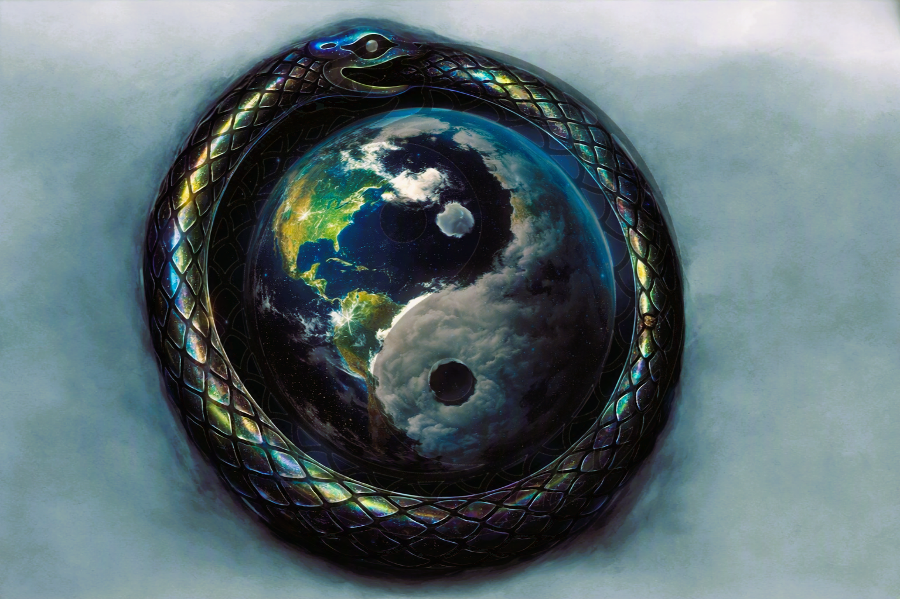

aDaB Possibilities
The WHAT · Value, minting, and coordination layer
aDaB is built to connect value, identity, and programmable utility across products, sponsors, and worlds.
What aDaB Can Link To
aDaB is not just a token balance. It is a value layer that can attach to products, events, identities, and sponsor programs.
- Store products: hardware and software can mint attached value and identity proof.
- PlayerPower: mint level can influence access, reputation, and priority lanes.
- TimeChain: each minted event can carry provenance and continuity.
- PayTooPlay: sponsor rewards and engagement can route through policy-based payouts.
- USDCx rails: programmable-dollar flows can settle rewards, grants, and campaign budgets.
Minting Modes
Earth3 DeFi and Minting
CowsCome4Dayz is the DeFi and minting engine designed for broad token coordination: BTC, ADA, NIGHT, and USDCx.
It can also support Sponsor-minted Cardano native assets and Player-minted assets that are minted from aDaB rules.
- Protection-first logic: sponsor assets can be tied to aDaB-backed pathways to reduce rug-risk scenarios.
- Programmable settlement: USDCx can support campaign payouts, milestone releases, and conditional distributions.
- Shared utility surface: minted sponsor/player assets can inherit the same core Earth3 utility lanes as aDaB.
Simple message: aDaB is the anchor. DeFi rails expand what can be built around it without losing player-aligned protection logic.
Nearly Unlimited Sponsor + Player Paths
Once value, identity, and programmable dollars are linked, one system can branch into many outcomes:
- Reward campaigns with dynamic payout logic
- Sponsor-specific asset programs with clear redemption rules
- Permissioned data/value exchanges under PlayerPower controls
- Cross-world product upgrades tied to verified participation
Same backbone, many use cases. That is the point of the aDaB layer.